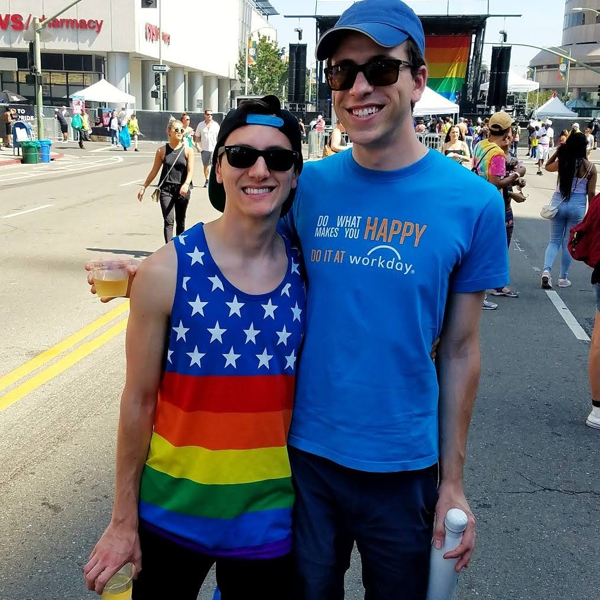
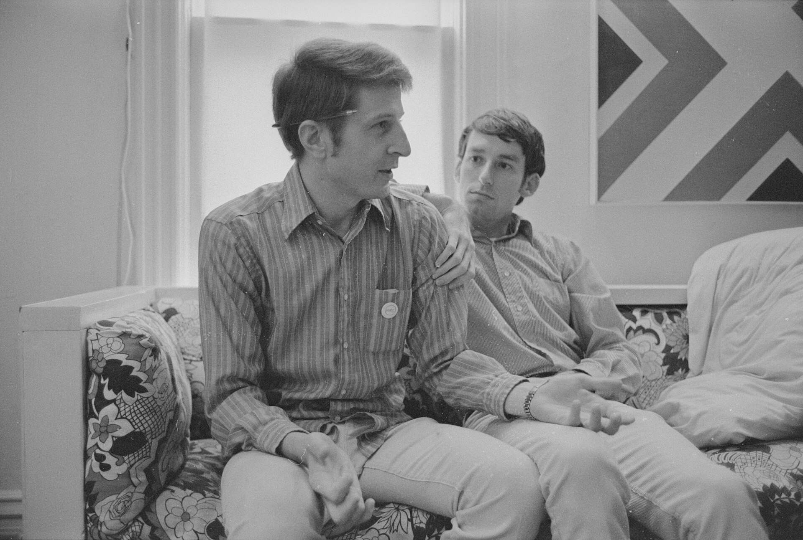
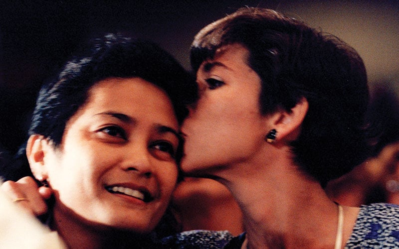
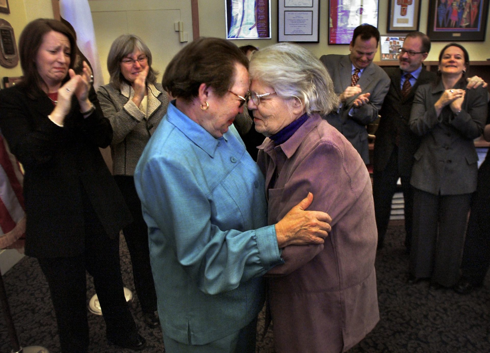
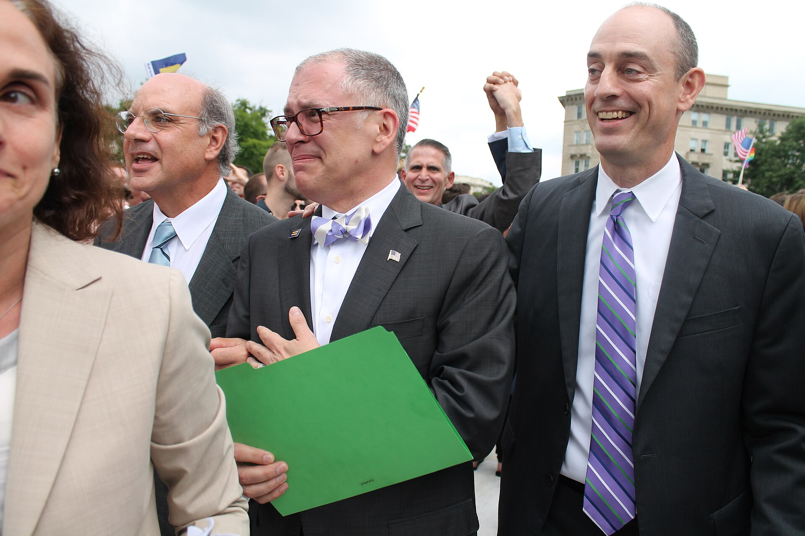
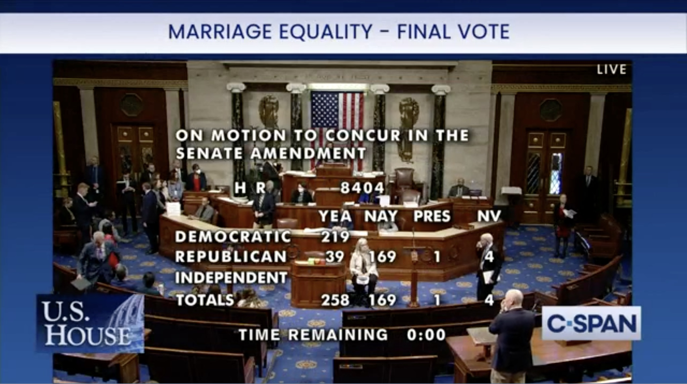
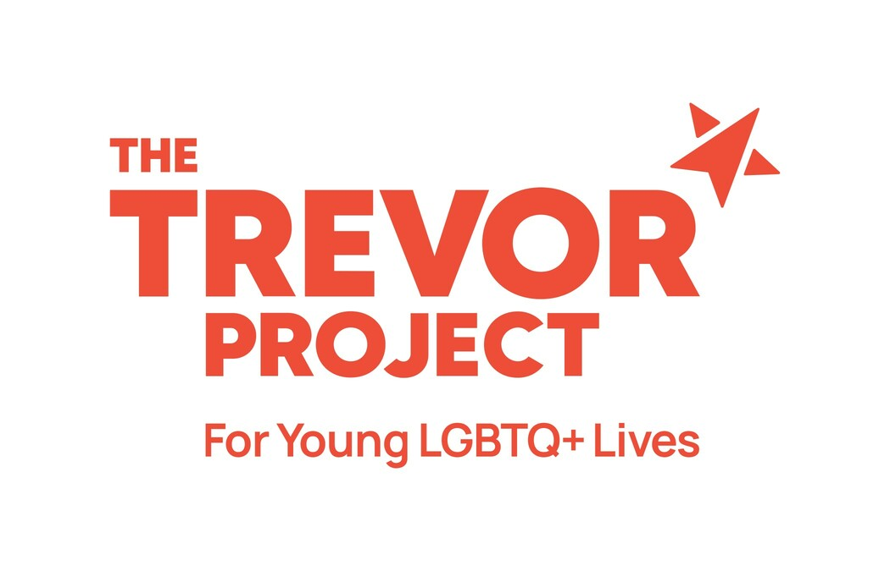

When the personal is political
We sincerely wish that there was nothing political about our relationship and our wedding. But by us being two men, our marriage carries inherent political connotations. We grew up in a society that not only didn't recognize the marriage of same-sex couples merely as a matter of status quo but actively worked to pass legislation (via elected officials and general population ballot measures) to deny the right for gay and lesbian couples to marry.
The recognition of being a "spouse" not only carries societal significance, but also bestows legal and financial privileges such as the ability to file your taxes jointly, the ability to sponsor a spouse's green card, the ability to ensure in old-age you aren't split up in different long-term care facilities by Medicare, amongst many others. In fact, until 2015, these rights and privileges were denied to same-sex couples whether they were in a legal civil union or even legally married in a state that recognized same-sex marriages, due to federal legislation passed in 1996.
As a Californian, the sad reality is that despite living in what is considered a progressive state, at no point in the lengthy legal process to allow same-sex marriage were our rights progressed by the communities in which we live. In the timeline below you will see that repeatedly the only path to equal rights was in the judiciary branch of our governments. The courts recognized that using gender to deny an individual the right to marry the person of their choice denies that person their fundamental right of liberty. That the religious beliefs of even a majority of the population should not infringe on the rights of a minority.
This year, there is a new ballot proposition (Prop 3) that gives Californian voters the opportunity to formally remove the language in our State Constitution added by Proposition 8 in 2008 that defined marriage as being between "a man and a woman." Prop 8 was found to be unconsitutional by the US Supreme Court and is no longer in effect, but the language still exists. Passing Prop 3 would protect the right to marry for all individuals in California should the US Supreme Court ever overturn their precedant and return the matter of marriage equality to be a state's rights matter. We obviously are big fans and hope you join us in voting "Yes" on Prop 3 this November.
We feel so lucky to have found each other and fallen in love in a time in which we are able to have our relationship be recognized in this profound and meaningful way by our friends, our family, and our government.

The Road to Marriage Equality
October 10, 1972
The start of the legal battle for marriage equality in the United States began at University of Minnesota's Minneapolis campus when James Michael McConnel, a librarian, and Richard John Baker, a law student, applied for a marriage license and were denied by the Clerk of District Court Gerald Nelson on the basis that they were both men. Baker sued Nelson insisting that the license was not forbidden (using the legal maxim 'everything that is not forbidden is permitted').

The case was heard by the Minnesota Supreme Court (Baker v. Nelson) who ruled against the couple stating that, "...construcing a marriage statute to restrict marriage to persons of the opposite sex 'does not offend' the U.S. Constitution." Baker appealed to the U.S. Supreme Court arguing that if the court were to interpret the statues to require marriage to be between people of the opposite-sex couples it would violate the people's fundamental right to marry under the Due Process Clause of the Fourteenth Amendment. It would also discriminate based on gender, contrary to the Equal Protection Clause of the Fourteenth Amendment; and deprive the people of privacy rights flowing from the Ninth Amendment.
The U.S. Supreme Court dismissed hearing the case with the single sentence stating, "The appeal is dismissed for want of substantial federal question." The U.S. Supreme Courts' dismissal of hearing the case was considered to be a decision on the merits of the case and became a binding precedent. This forced the lower courts to rule in the same manner as the U.S. Supreme Court when presented with the exact same issue. This effectively prevented any legal challenges to same-sex marriage for the next twenty years.
1980's
In a time where being gay meant living in secret or living as an outcast, gay marriage was hardly an agenda item. Few if any states had laws preventing discrimination on the basis of sexual orientation, yet at the same time the AIDS epidemic in the 1980's and 1990's raised questions around survivorship and inheritance benefits of same-sex couples.
May 5, 1993
The Supreme Court of Hawaii rules in the Baehr v. Miike court case that while Hawaii's constitution did not include a fundamental right to same-sex marriage, it did find that under the state's equal protection clause that denying marriage licenses to same-sex couples constituted discrimination based on sex that required justification by the state. Within the state of Hawaii, this led to a commission to study the issue. While the commission ultimately recommended opening marriage to same-sex couples, the case was dismissed. It was dismissed since, prior to any further actions, voters of Hawaii passed an amendment explicitly reserving marriage for opposite-sex couples, thereby nullifying the court case.

This ruling, while not resulting in any direct legislative changes, created the first real spark of hope for those in favor of same-sex marriage and stoked the fears of those who wanted to reserve marriage for opposite-sex couples.
September 21, 1996
Despite finding the legislation "divisive and unnecessary," and in the midst of his own extramarital affair yet to be made public, President Clinton signs the veto-proof, majority-backed Defense of Marriage Act (DOMA) into law. This law defined marriage by the federal government as between one man and one woman and also allowed states to deny same-sex marriages granted under the laws of other states. It effectively prevented marriages and the associated benefits to same-sex couples.
The new legislation was in direct response to the Baehr v. Miike case which implied that if "marriage in Hawaii [were] to include homosexual couples, [this] could make such couples eligible for a whole range of federal rights and benefits." The House Judiciary Committee stated that DOMA was intended by Congress to "reflect and honor a collective moral judgment and to express moral disapproval of homosexuality" and "make explicit what has been understood under federal law for over 200 years."
June 26, 2003
The U.S. Supreme Court rules that States cannot have laws with criminal punishments for consensual, adult non-procreative sexual activity with the ruling from Lawrence v. Texas striking down laws in 14 states making same-sex sexual activity legal in every U.S. state and territory. This ruling was the first federal law permitting homosexuality. It was an expansion of Eisenstadt v. Baird ruling, which was a 1972 case that established the right of unmarried people to possess contraception on the same basis as married couples and effectively legalized premarital sex.
February 12, 2004
Del Martin and Phyllis Lyon, after being a couple for 51 years, have the first legal same-sex marriage ceremony performed in the United States when the mayor of San Francsico, Gavin Newsom, ordered city hall to issue marriage licenses to same sex couples despite it being illegal to do so at both the state and federal level.

Marriage licenses were issued to over 4,000 same sex couples until March 11, 2004 when the Supreme Court of California ordered an immediate halt to gay marriages in San Francisco citing Newsom's lack of authority to bypass state law and ruled the marriages were void. This prompted a series of lawsuits that resulted in a California state ruling in favor of same-sex marriage in 2008.
February 25, 2004
President Bush in his State of the Union address announces his opposition to same-sex marriage, and the House introduces a constitutional amendment that would define marriage as between a man and a woman.
Amendments to the constitution require a 2/3rd's majority vote and would prevent the court system from extending marriage rights to same-sex couples and require a subsequent 2/3rd's majority vote to change the amendment. The Federal Marriage Amendment was drafted, and while it won a majority of votes, it fell short of the 2/3rds majority required to amend the constitution. Revised versions of the Federal Marriage Amendment would be reconsidered in subsequent years with the most recent version being considered in 2015.
May 17, 2004
On November 18, 2003, Massachusetts becomes the first state to legalize same-sex marriage via the Massachusetts Supreme Judicial Court (SJC) ruling of Goodridge v. Department of Public Health that posed the state’s ban on same-sex marriage was unconstitutional. The SJC provided a definition of marriage that would meet the State Constitution’s requirements, stating, “We construe civil marriage to mean the voluntary union of two persons as spouses, to the exclusion of all others...We declare that barring an individual from the protections, benefits, and obligations of civil marriage solely because that person would marry a person of the same sex violates the Massachusetts Constitution.” The court stayed its ruling for 180 days to allow the state legislature to “take such action as it may deem appropriate in light of this opinion.”
On February 4, 2004, the court rejected a state legislature proposal seeking to use civil unions as an alternative to marriage for same-sex couples. The court deemed the proposal unacceptable since the distinction between marriage for different-sex couples and civil unions for same-sex couples constituted unconstitutional discrimination, even if the rights and obligations attached to each were identical. It called the difference between the terms "a considered choice of language that reflects a demonstrable assigning of same-sex, largely homosexual, couples to second-class status." The state law allowing same-sex marriage went into effect May 17, 2004.
In response, on November 2, 2004, eleven states passed state constitutional amendments defining marriage between a man and a woman. By 2006 the number had grown to 21 states, and by 2009, 29 states had constitutional provisions restricting marriage, and an additional 12 had statues that did so.
September 2005 & October 2007
California Governor Arnold Schwarzenegger twice vetoes legislation that would have made same-sex marriage legal in California.
May 15, 2008 - November 2008
The Supreme Court of California issues a decision legalizing same-sex marriage in California (In re Marriage Cases), holding that California's existing opposite-sex definition of marriage violated the constitutional rights of same-sex couples.
This ruling prompted a ballot initiative, known as Prop 8, by opponents to same-sex marriage which would amend the California State constitution to define marriage as between a man and a woman. Prop 8 was voted into California state law in November 2008 ending the licensing and recognition of same-sex marriages in California after only less than six months of it being legalized by the Supreme Court of California.
February 23, 2011
President Obama declares the Defense of Marriage Act (DOMA) unconstitutional and instructs the Justice Department to stop defending it in court.
July 29, 2013
The resulting series of court cases emerging, known as Hollingsworth v. Perry, from the passage of Prop 8 in California was heard by Judge Vaughn Walker, who in 2010 ruled that the banning of same-sex marriage violated equal protection under the law granted by the Fourteenth Amendment. After the State of California refused to continue to defend Prop 8, the official sponsors of the proposition intervened and appealed to the U.S. Supreme Court. In a somewhat confusing ruling in 2013, the U.S. Supreme Court ruled that the official sponsors did not have proper standing to appeal an adverse federal court ruling. As a result, Judge Walker's findings remain the controlling precedent, and Prop 8 is invalid. This meant that same-sex marriage was again legal in California based on the repeal of Prop 8 but had no legal consequence for other states or federal marriage recognition and was not considered an opinion by the U.S. Supreme Court on same-sex marriage itself.
On the same day, the U.S. Supreme Court also issued a ruling on United States v. Windsor. Edith Windsor had been legally married in New York to her wife Thea Spyer. Spyer died in 2009 leaving her estate to Windsor who was barred from claiming the federal estate tax exemption for surviving spouses based on the Defense of Marriage Act (DOMA). After hearing the case, the U.S. Supreme Court ruled that Section 3 of the Defense of Marriage Act violated the constitution as it was a "deprivation of the liberty of the person protected by the Fifth Amendment." This ruling enabled same-sex marriages to be recognized federally with all the associated benefits.
Following this ruling, the Obama Administration ordered the following benefits for all same-sex marriages, which were not previously allowed, regardless if the couple resided in a state that recognized their union:
- Same-sex couples could file their federal income taxes jointly.
- Death benefits are paid to survivors of same-sex marriage by the Social Security Administration.
- The Department of Homeland Security treats same-sex spouses equally for the purpose of obtaining a green card.
- Federal employees in same-sex marriages can apply for health, dental, life, long-term care, and retirement benefits.
- Legally married same-sex seniors on Medicare are eligible for equal benefits and joint placement in nursing homes.
June 26, 2015
In a consolidation of six lower court lawsuits known as Obergefell v. Hodges, James Obergefell, who was legally married in Maryland to his spouse, John Arthur, who was terminally ill with ALS, sued the Ohio Registrar for not allowing him to be listed as his surviving spouse on his death certificate.

The case was heard by the U.S. Supreme Court who issued a landmark 5-4 decision that ruled the fundamental right to marry is guaranteed to same-sex couples by both the Due Process Clause and the Equal Protection Clause of the Fourteenth Amendment of the U.S. Constitution– granting same-sex couples in all 50 states the right to full, equal recognition under the law (where as previously a same-sex marriage could be recognized federally but not by a given state).
June 24, 2022
The U.S. Supreme Court ruled in Dobbs v. Jackson Women's Health Organization, in a 6-3 vote, to overturn prior Supreme Court rulings of Roe v. Wade (1973 case) and Planned Parenthood v. Casey (1992 case preventing states from banning abortion prior to fetal viability). This returned the rights to individual states to regulate any aspect of abortion not protected by federal law.
While having obvious consequences for women's health, this precedent-breaking ruling also has significant implications for marriage equality. The original Roe v. Wade decision was ruled, in part, on the basis that a pregnant woman had a fundamental right to privacy under the Due Process Clause of the Fourteenth Amendment to the U.S. Constitution. In addition to Roe v. Wade, other notable cases where the U.S. Supreme Court used the same interpretation of the Fourteenth Amendment granting an individual a right to privacy included Griswold v. Connecticut (1965 case protecting a married couple's right to contraception), Lawrence v. Texas (2003 case banning criminal punishments for consensual, adult non-procreative sexual activity), and Obergefell v. Hodges (2015 case granting same-sex protections in all 50 states). With prior precedence around an individual’s right to privacy now in question, so too are the recently won marriage rights of same-sex couples.
December 13, 2022
In response to concerns about the power of the judiciary to overturn precedent, the U.S. Congress passed, and President Biden signed, the Respect for Marriage Act Legislative Action. This Act replaces the language defining marriage as 'between a man and a woman' and a spouse as 'a person of the opposite sex' (found to be unconstitutional by SCOTUS in United States v. Windsor in 2013, but technically still the law) with language that recognizes any marriage 'between two individuals that is valid under state law'. The act also requires states to recognize marriages performed out-of-state and that the marraige cannot be denied on the basis of sex, race, ethnicity, or national origin.
(It is important to note that the Respect for Marriage Act also protects interracial marriages, which were made legal by similar precedence as Roe v. Wade, which has been overturned.)

What's left?
While the legal status of gay marriage in the United States seem to be settled, the same is not true across the world. Laws around same-sex marriage outside of the United States range from being legal to being punishable by death.
Even in places where same-sex couples can legally marry, like in teh U.S., there remain many communities who are still very intolerant to anyone identifying as LGBTQ+. In particular for young people who grow up in these communities but are also coming to terms with their own identity, this can create an isolating and depressing experience when they see no one around them they can look up to as a role model or count on as an ally. Fewer than 40% of LGBTQ+ young people found their home LGBTQ-affirming, 41% of LGBTQ+ young people seriously considered attempting suicide in the past year, and 56% of LGBTQ+ young people who wanted mental health care in the past year were not able to get it.
We have been lucky in life to not only find love in each other but to be surrounded with love from our families and friends. We have also been lucky in life in a way that leaves us wanting for little. Instead of purchasing us a wedding gift, please consider making a donation to The Trevor Project – you would have our sincere appreciation. The Trevor Project is a (Charity Navigator 100% 4-star) 501(c)(3) tax-exempt non-profit that provides free, confidential, and secure 24/7 access to trained crisis counselors for LGBTQ+ young people who may be struggling with issues such as coming out, LGBTQ+ identity, depression, and suicide.
